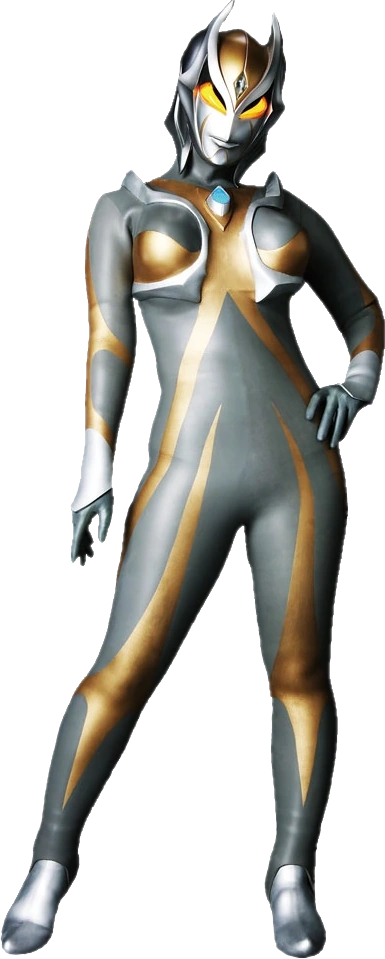
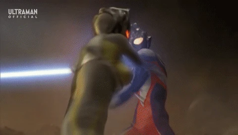
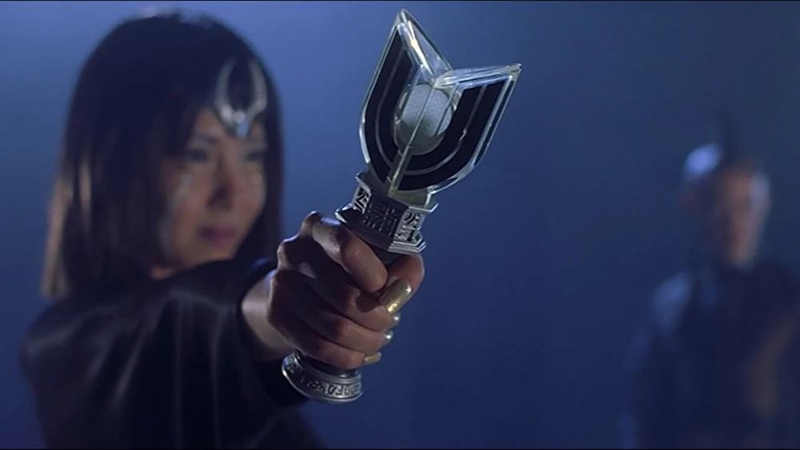

Información del Personaje
Origen:Nebula desconocida
Altura: 50 metros
Peso: 39,000 toneladas
Alianza: Amenaza (ENTIDAD OSCURA CLASE OMEGA)
Historia
Camearra es una antigua gigante de luz corrompida por la oscuridad, conocida por su pasado íntimo con Ultraman Tiga. Ella, junto a Darramb y Hudra, formó parte del trío original de guerreros oscuros que una vez dominaron galaxias enteras. Camearra fue la más poderosa y la líder emocional del grupo, destacando por su capacidad para manipular la energía oscura y su dominio sobre los impulsos destructivos del corazón humano.
Su ruptura con Tiga ocurrió cuando este abandonó el camino de la oscuridad para convertirse en un protector de la humanidad. Camearra lo consideró una traición personal y desde entonces juró destruir lo que Tiga defiende.
Alianza WKDF - Ultraman Tiga
Reconociendo la conexión emocional entre Tiga y Camearra, la WKDF ha considerado abrir un canal diplomático con el gigante de luz. A pesar de su carácter solitario, Tiga ha respondido indirectamente a eventos catastróficos en la Tierra, lo que indica una disposición a proteger el planeta.
El Proyecto Corazón de Luz busca establecer un vínculo estable con Tiga y, en casos extremos, coordinar una operación conjunta para enfrentar a Camearra si su retorno se materializa completamente. La WKDF también ha activado el Protocolo Sombra Rota, una iniciativa de contingencia en caso de que Camearra influencie o corrompa a otros gigantes.
Protocolos de Interacción
1.Aislamiento emocional del personal en zonas afectadas para evitar manipulación psíquica.
2.Refuerzo dimensional con sellos tecnológicos en colaboración con la U.G.T.
3.Monitoreo astral mediante satélites sensoriales clase “THETA-LUX”.
4.Activación inmediata del Protocolo T (Tiga) si se detecta un nivel de energía coincidente.
Camearra no solo representa una amenaza física, sino también emocional. Su vínculo con Tiga la convierte en una entidad única, cuya erradicación podría depender del propio guerrero de la luz. La WKDF, en su compromiso con la seguridad global, ha decidido seguir de cerca cualquier señal relacionada con su resurgimiento, fortaleciendo su alianza potencial con Ultraman Tiga.
Imagen del Sujeto
Habilidades
Latigo de Camearra
Camearra puede invocar un largo látigo hecho de hielo desde su mano derecha y puede usarlo con gran efecto en combate, pudiendo golpear a su oponente varias veces a la vez con él.
Izword
Camearra puede convertir el látigo de hielo en una espada de hielo afilada que puede usar para atacar a sus oponentes.
Poder Oscuro
Como una Ultra que fue arrastrada a la oscuridad, Camearra es capaz de manipularla. También mencionó que Tiga Dark la robó en el pasado como parte de su transición a la luz.
Videos de Metraje Encontrado
Video de Evidencia 1: Ultraman Tiga vs Camearra
Video de Evidencia 2: Una muestra de la relacion rota de los dos personajes
Video de Evidencia 3: Ultraman Decker y Trigger salvan a Camearra
Video de Evidencia 4: Ultraman Trigger vs Camearra